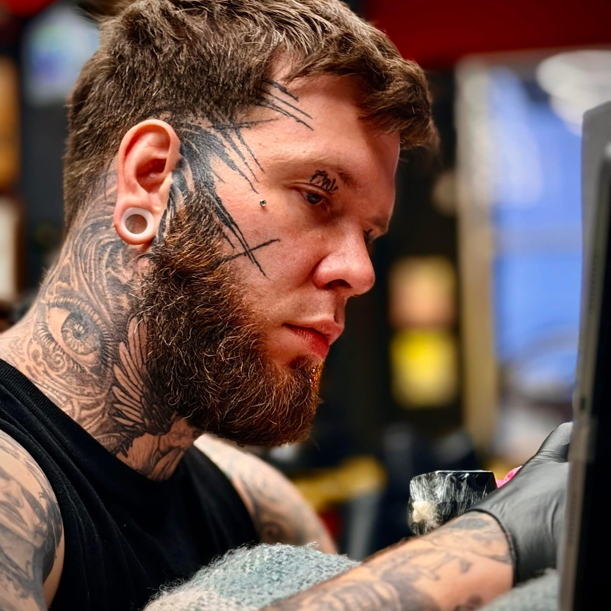

Black & Gray, Script & Cover-Up Specialist

With nearly six years of professional experience, Mason specializes in black and gray, high-contrast work, custom script, and cover-ups. Tattooing is more than a career for Mason—it’s his passion and his craft. He brings precision, creativity, and quality to every piece, along with a personality that makes every session memorable. Expect great conversation, plenty of laughs, and a relaxed atmosphere where you can feel comfortable being yourself. Whether you’re looking for a bold statement piece or something simple and meaningful, Mason is ready to bring your vision to life.
Book an appointment with Mason today